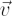
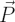
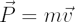
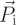
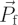
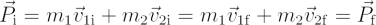
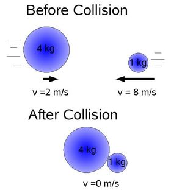

In Newtonian physics momentum is the product of an object’s mass, m and velocity,

and consequently a vector quantity. Often given the symbol
, we can write the momentum of an object as:
In Newtonian physics, momentum is always conserved in a closed system. So if two objects collide, the momentum of the two bodies prior to the collision

(initial) is equal to their vector sum after the collision
(final). ie:
At the microphysics level, even light has a momentum associated with it.
In the physics of rotation, there is an analogue to momentum known as angular momentum, which is also conserved.
| Example: A 4 kg mass travelling at 2 ms-1 has the same momentum as a 1 kg mass travelling at 8 ms-1. If they were travelling in opposite directions and became bound after the collision, the resulting body would be stationary at the net momentum would be zero. |
 |